Маршрут вашей работы
Настройте этапы и роли. Девять заготовок помогают начать, а не заставляют всех работать одинаково.
TeethTech CRM связывает наряд, производственные этапы, техников и результат работы. Чтобы руководитель видел ситуацию, а сотрудники понимали следующий шаг.
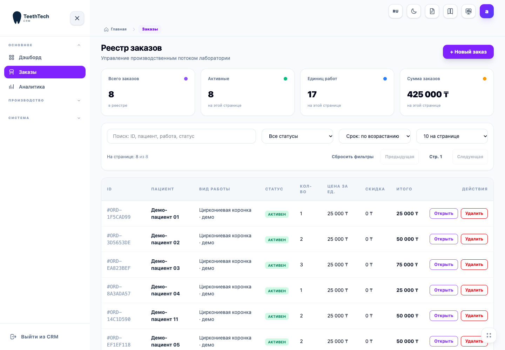
Наше предложение — понятный пилот и возможность настроить систему под свою лабораторию.
Настройте этапы и роли. Девять заготовок помогают начать, а не заставляют всех работать одинаково.
В отчёте видно, какие этапы и задачи завершены, кем и когда. У сотрудника есть свой рабочий экран.
Льготная цена первым участникам и обсуждение реальных задач лаборатории напрямую с разработчиком.
Скриншоты приложения с учебными данными. Для презентации не использованы сведения реальных пациентов.
Клиника, пациент, зубы, материалы, задачи техников и лабораторное задание. Повторные заказы связываются с карточкой пациента без ручного согласования кодов.
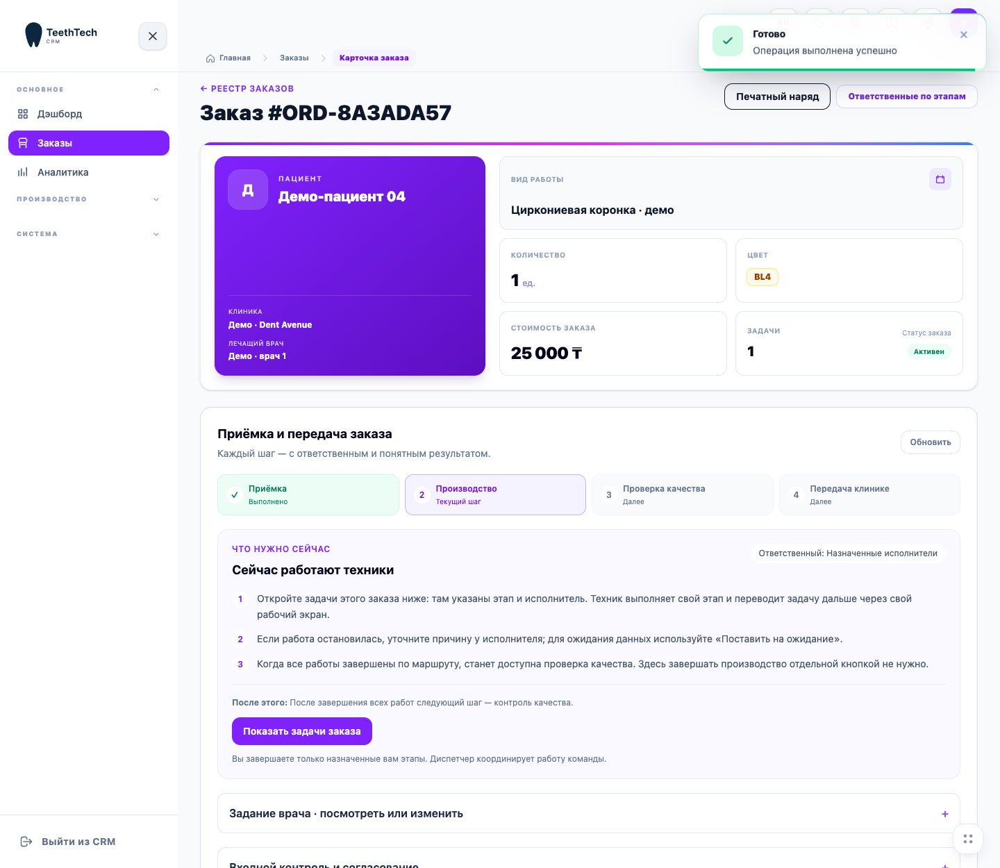
Приём, ожидание ответа врача, контроль качества и передача готовой работы. История действий остаётся в заказе.
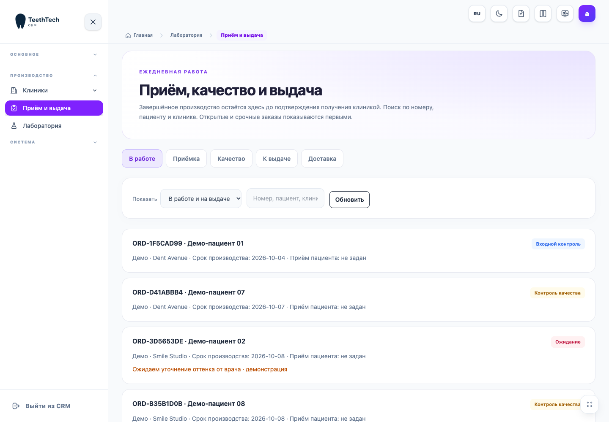
Текущий этап, ответственный и инструкция меняются вместе с состоянием заказа. При ожидании, согласовании, проверке и выдаче CRM объясняет следующий шаг и результат действия. Комментарий запрашивается в отдельном окне с примером заполнения.
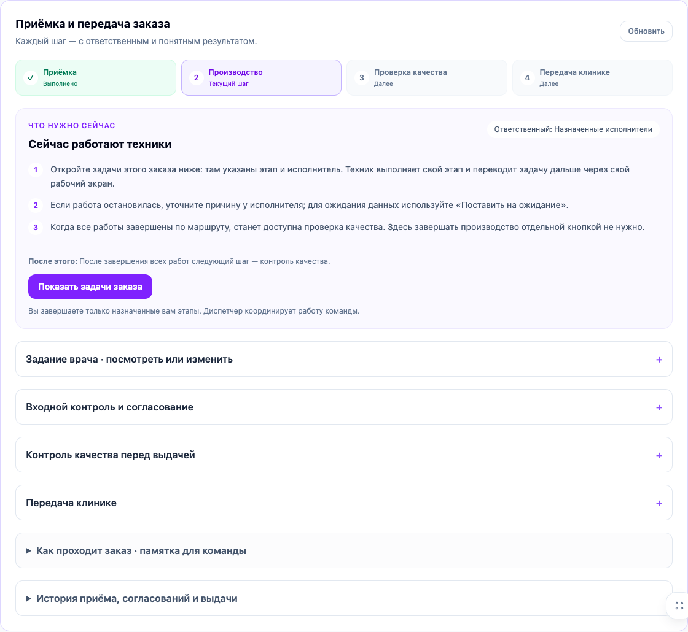
Выберите заготовку, проверьте этапы и назначьте роли. Системные начало, проверка и закрытие добавляются автоматически.
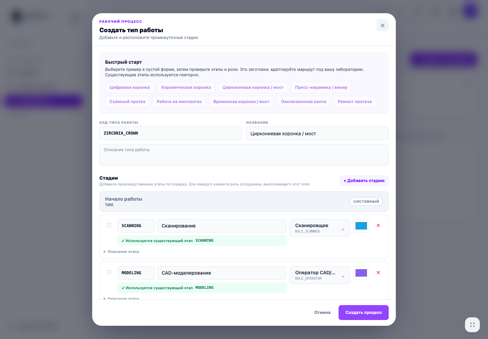
Личный экран с назначенными работами, сроками и текущими этапами. Результат завершения отражается в отчёте руководителя.
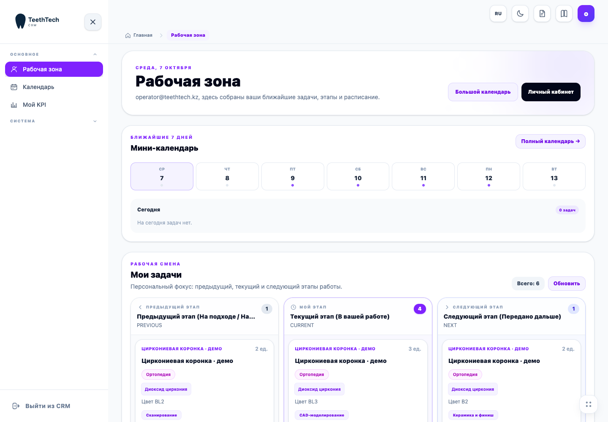
Сроки сдачи, просрочки, работы без исполнителя, нагрузка этапов и команды. Отдельный обзор производства помогает руководителю находить задержки и открывать нужный заказ сразу из списка. KPI сотрудников остаётся самостоятельным отчётом.
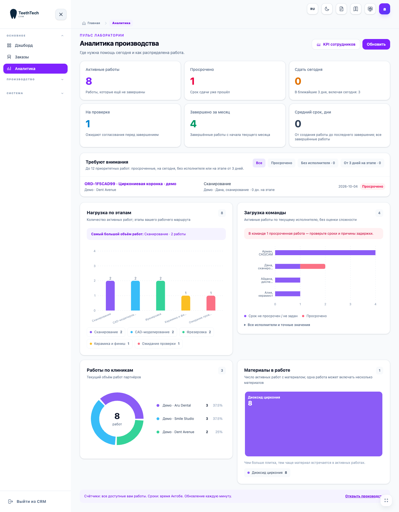
Завершённые этапы и задачи, объём работы и журнал событий. Отчёт помогает разбирать нагрузку без ручного подсчёта.
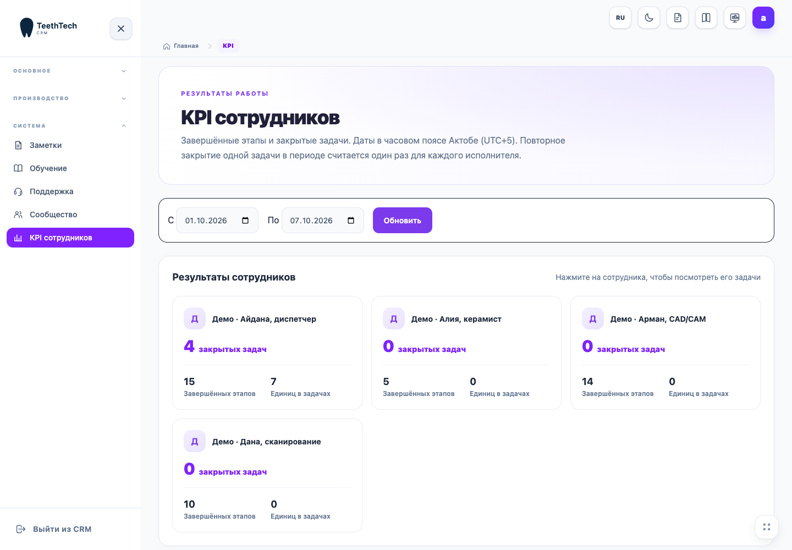
Пошаговые подсказки внутри CRM помогают сотрудникам освоить основные действия.
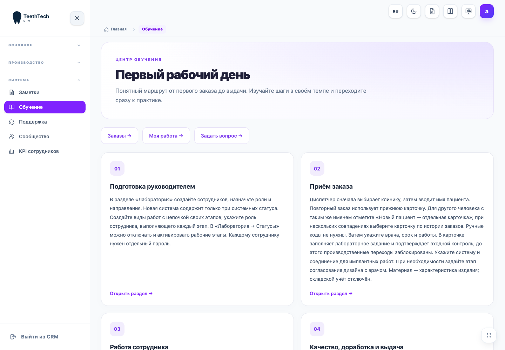
В учебной SaaS-установке сотрудник отправляет заявку со скриншотом, получает ответ и видит статус решения.
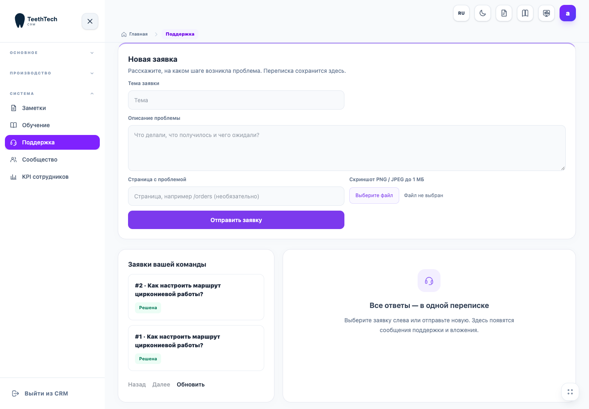
Добровольное участие: публикации и комментарии. Личные данные пациентов не предназначены для общих обсуждений.
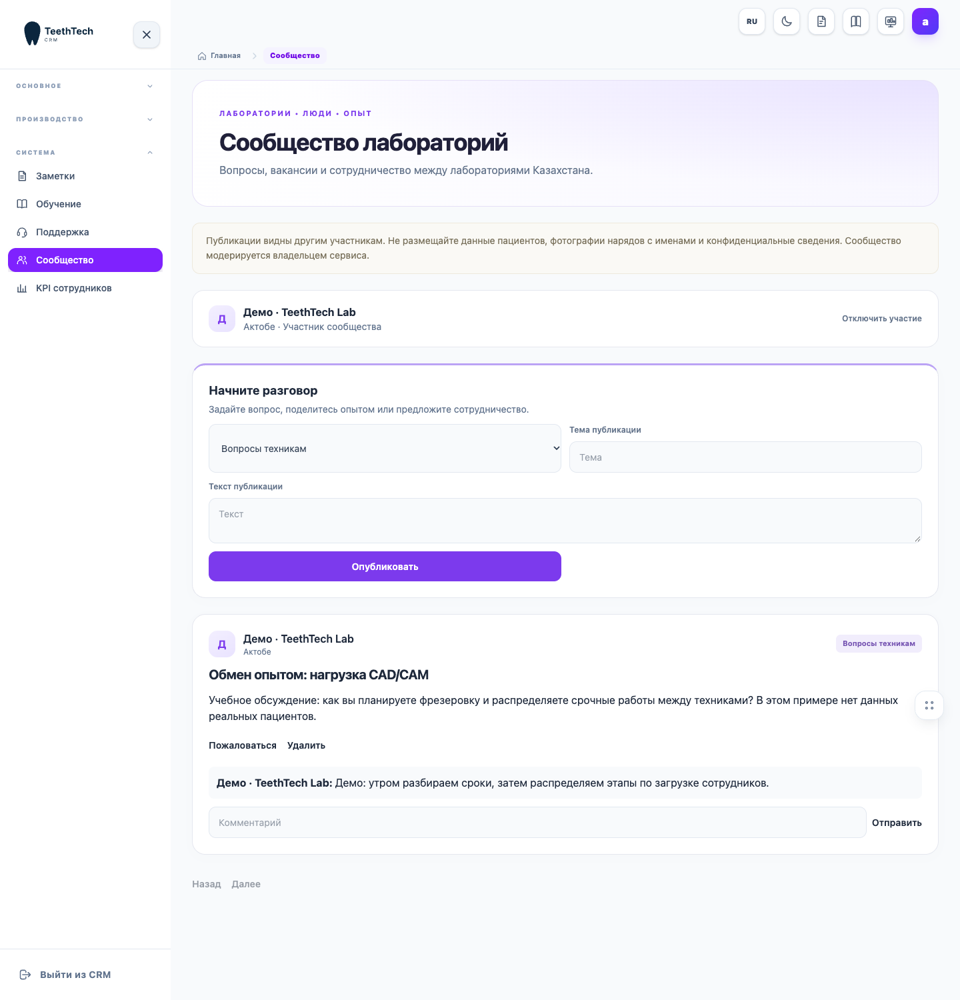
У специализированных систем есть пересекающиеся функции. На демонстрации проверьте именно ваш заказ, переходы техников и удобство отчёта.
| Критерий | Наше предложение |
|---|---|
| Производство | Настраиваемые маршруты, приёмка, качество, выдача и доработка |
| Команда | Личные роли, экран техника и KPI завершений |
| Начало работы | Готовые заготовки, учебные данные и встроенное обучение |
| Стоимость пилота | 19 900 ₸/мес на первые 6 месяцев |
| Что проверять отдельно | Ваши материалы, количество сотрудников, объём файлов и условия поддержки |
Для ориентира: на сайте Stylus Dental на 07.10.2026 базовый тариф указан как 30 000 ₸/мес. Он включает собственный набор возможностей, в том числе прайсы; полный состав тарифов отличается. Сравнение одной цены не означает одинаковую функциональность или превосходство продукта.